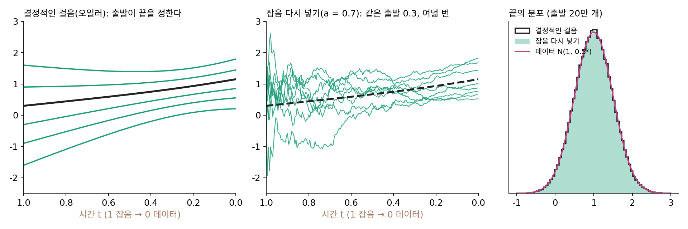

잡음 다시 넣기: 결정적인 걸음을 같은 분포의 확률적인 걸음으로
샘플러 메뉴를 다시 떠올려 보자. 오일러, DPM-Solver++ 2M, 다이얼을 0 에 둔 DDIM 은 걸음마다 새 잡음을 넣지 않는다. 확률 흐름 ODE 를 끊어 걷는 결정적인 걸음이라, 출발 잡음이 정해지면 그림이 하나로 정해진다. 걸음의 로그확률은 분산이 양수인 걸음에만 있었다. 그러면 어느 샘플러로 뽑느냐에 따라 보상 학습이 되고 안 되고가 갈린다.
| 샘플러 (ComfyUI 이름) | 걸음마다 새 잡음 | 걸음의 로그확률 |
|---|---|---|
DDPM 의 걸음 (ddpm) |
넣는다 | 있다 |
오일러 (euler) |
넣지 않는다 | 없다 |
오일러 앤세스트럴 (euler_ancestral) |
넣는다 | 있다 |
DDIM (ddim, 다이얼 0) / 다이얼을 0 보다 크게 |
넣지 않는다 / 넣는다 | 없다 / 있다 |
DPM-Solver++ 2M (dpmpp_2m) |
넣지 않는다 | 없다 |
그 SDE 판 (dpmpp_2m_sde, dpmpp_sde) |
넣는다 | 있다 |
| 플로우 모델의 오일러 걸음 | 넣지 않는다 | 없다 |
막히는 까닭은 둘이다. 하나는 앞에서 본 대로 로그확률과 그 기울기가 없다는 것이다. 다른 하나는 탐색이 없다는 것이다. 보상 학습은 같은 프롬프트로 여러 장을 뽑아 좋았던 쪽으로 미는데, 결정적인 걸음에서는 같은 출발 잡음이 언제나 같은 그림을 낸다. 걸음 하나하나는 고를 것이 없는 행동이다.
그런데 플로우 매칭으로 배운 SD3 나 FLUX 같은 모델은 흔히 결정적인 오일러 걸음으로 그림을 뽑는다. 이런 모델은 보상으로 고칠 수 없는 걸까? 길이 둘 있었다. 확률 흐름 ODE 와 역방향 SDE 는 걷는 방식은 달라도 매 순간 같은 분포를 지났다. 역방향 SDE 는 확률 흐름 ODE 에 랑주뱅 쌍(스코어 쪽으로 더 끄는 몫과 그만큼의 바람)을 얹은 것이었다. 결정적인 걸음에 랑주뱅 쌍을 다시 얹으면, 분포는 그대로 두고 걸음마다 흔들림을 되찾을 수 있지 않을까?
역사: 플로우 모델에 온라인 강화학습을
2025년 5월 리우(Jie Liu)와 동료들은 「Flow-GRPO: 온라인 강화학습으로 플로우 매칭 모델 학습하기」를 내놓았다. 논문 요약이 내세운 것은 두 가지다. 결정적인 ODE 를 매 순간 같은 분포를 지나는 SDE 로 바꿔 강화학습에 필요한 탐색을 얻는 것, 그리고 학습 때는 걸음 수를 줄여 빠르게 하는 것이다(학습 10걸음, 생성은 Stable Diffusion 3.5 의 중간 크기 모델 SD3.5-M 의 기본값 40걸음). 이렇게 고친 SD3.5-M 은 물체의 개수·색·자리를 맞히는지 보는 GenEval 점수가 63% 에서 95% 로, 그림 안에 글자를 정확히 쓰는 정확도가 59% 에서 92% 로 올랐다. 며칠 뒤 쉐(Zeyue Xue)와 동료들의 DanceGRPO 도 같은 생각으로 그림과 영상 생성 모델을 고쳤다.
한 걸음의 식
플로우 모델의 신경망은 속도 v를 내놓는다. 랑주뱅 쌍에는 스코어가 필요한데, 속도와 스코어의 다리가 이미 있었다. 직선 길 xt = (1 − t)x₀ + tε 에서 그 자리를 지나는 짝들의 잡음 평균은 ε̂ = xt + (1 − t)v 이고, 스코어는 그것을 잡음 크기 t로 나눈 −ε̂/t 다. 결정적인 오일러 걸음에 이 스코어로 만든 랑주뱅 쌍을 얹으면 한 걸음은 다음과 같다.
앞의 두 항이 원래의 오일러 걸음이고, 뒤의 두 항이 랑주뱅 쌍이다. 잡음 세기 gt는 데이터 쪽 끝(t → 0)에서 0 으로 줄고 잡음 쪽 끝(t → 1)에서 한없이 커진다. 그래서 공식 코드는 t = 1 인 첫 걸음에서만 분모의 t 자리에 다음 눈금 값을 쓴다. 이 한 걸음은 평균이 앞의 세 항이고 표준편차가 gt√Δt인 정규분포다. 걸음의 로그확률 −‖다음 자리 − 평균‖²/(2 × 분산) − (d/2)log(2π × 분산)에서 분산 자리에 gt²Δt를 넣으면 그대로 계산된다.
장난감으로 확인하자. 데이터가 N(1, 0.5²)인 1차원 정규분포이면 주변 속도를 식으로 적을 수 있으니, 신경망 자리에 그 식을 넣는다. 잡음 0.3 에서 출발해 200걸음을 걸으면 결정적인 오일러 걸음은 몇 번을 걸어도 1.149 에 닿는다. a = 0.7 로 잡음을 다시 넣으면 같은 출발에서 여덟 번 걸은 끝이 0.76, 0.65, 1.82, 0.53, 1.68, 0.87, 1.44, 1.00 으로 갈린다. 출발 잡음 40만 개로 끝의 분포를 재면, 결정적인 걸음은 평균 1.001·표준편차 0.496, 잡음을 다시 넣은 걸음은 0.999·0.501 이다(데이터는 1 과 0.5). 경로는 흔들리지만 분포는 그대로다. 매 순간의 분포를 지키는 랑주뱅 쌍을 얹어 결정적인 걸음을 확률적인 걸음으로 바꾸는 이 일을 잡음 다시 넣기 (결정적인 걸음에 같은 분포를 지키는 랑주뱅 쌍을 얹기 / ODE-to-SDE conversion)라 하자.

ML에서: 흔들림이 생기면 그룹으로 견준다
잡음을 다시 넣으면 같은 프롬프트와 같은 모델로도 그림이 여러 장 나온다. GRPO 는 한 프롬프트로 뽑은 그림 여러 장의 보상을 그 묶음의 평균과 표준편차로 고쳐 적고(평균보다 나은 그림은 양수, 못한 그림은 음수), 그 값으로 각 그림 경로의 걸음 로그확률을 민다. 따로 가치를 추정하는 신경망이 필요 없어 큰 그림·영상 모델에 쓰기 쉽다. Flow-GRPO 는 학습 때 10걸음으로 뽑고 생성은 40걸음으로 해도 성능을 잃지 않았다고 적었다. 한편 학습하는 모델과 얼려 둔 기준 모델이 같은 잡음 세기를 쓰므로, 두 모델의 한 걸음 분포는 평균만 다른 정규분포가 되고 둘 사이의 KL 발산(두 분포가 얼마나 다른지 재는 양)을 걸음마다 식으로 정확히 계산할 수 있다.
문제 3. 잡음만 넣으면
위 장난감(데이터 N(1, 0.5²), a = 0.7)에서 민준은 「스코어 항은 번거로우니, 오일러 걸음에 잡음 gt√Δt ε만 더하자」고 한다. (가) 10걸음으로 걸으면 끝의 표준편차는 0.5 에 가까울까? (나) 걸음을 200 으로 늘리면 나아질까? (다) 랑주뱅 쌍을 온전히 얹으면 10걸음·200걸음에서 각각 얼마인가? 위젯에서 「문제 3 불러오기」로 확인할 수 있다.

잡음이 평균은 안 바꾸니까 평균 1 은 지키고, 표준편차는 조금 커지겠죠. 0.55 쯤?

위젯으로 10걸음을 걸어 볼까요? 몇이 나와요?

0.84 예요. 데이터보다 1.7배 가까이 퍼졌어요. 그럼 걸음을 잘게 나누면 줄겠죠. 200걸음은… 1.08 이요? 더 나빠졌어요.

걸음을 잘게 나눠도 넣는 잡음의 분산은 걸음마다 gt²Δt라 다 더하면 gt²를 시간에 걸쳐 적분한 값이야. 그 값은 걸음 수로 줄지 않아. 오히려 gt가 t = 1 근처에서 커지니까, 그쪽 눈금이 촘촘해질수록 더 많이 넣게 돼.

그러면 랑주뱅 쌍의 스코어 항은 무슨 일을 하죠?

넣은 잡음이 퍼뜨린 만큼을 스코어 쪽으로 끌어 되모으는 거죠. 잡음만 넣으면 퍼뜨리기만 하고 거두는 게 없어요.
온전히 얹으면 10걸음 0.479, 200걸음 0.501 이네요. 이쪽은 걸음을 늘리면 0.5 로 다가가요.

그래요. 잡음은 아무렇게나 넣을 수 있는 게 아니라, 스코어 몫과 짝을 지어야 분포를 지켜요. 바람을 끄면 점들이 꼭대기로 몰렸던 것을 거꾸로 본 셈이에요.

조별 과제에서 아이디어를 막 던지기만 하고 정리하는 사람이 없으면 보고서가 산으로 가는 거랑 같네요. 던진 만큼 모아 주는 사람이 있어야 해요.
문제 4. 한 걸음의 로그확률
10걸음 눈금(Δt = 0.1)에서 t = 0.5, 지금 자리 x = 0.8 이고, 신경망이 내놓은 속도는 v = −0.64 다. a = 0.7 이다. (가) 결정적인 오일러 걸음은 어디에 닿는가? (나) 잡음을 다시 넣은 걸음의 평균과 표준편차는? (다) 실제로 뽑힌 다음 자리가 0.85 였다면 걸음의 로그확률은?
(가)는 0.8 − (−0.64)(0.1) = 0.864 예요. (나)는 gt = 0.7√(0.5/0.5) = 0.7, 표준편차는 0.7 × √0.1 = 0.221 이고, 평균도 0.864 겠죠. 잡음은 평균이 0 이니까요.

평균은 앞의 세 항이었어요. 셋째 항은 몇이죠?

아, 스코어 몫을 빠뜨렸어요. ε̂ = 0.8 + 0.5 × (−0.64) = 0.48, 스코어는 −0.48/0.5 = −0.96, ½ × 0.49 × (−0.96) × 0.1 = −0.0235. 평균은 0.864 − 0.0235 = 0.8405 예요.
(다)는 걸음의 로그확률 −(어긋남)²/(2 × 분산) − ½log(2π × 분산)에 분산 0.221² = 0.049 를 넣으면 돼. 어긋남은 0.85 − 0.8405 = 0.0095 라 거의 0 이고, −½log(2π × 0.049) = 0.589 에서 조금 빠져서 0.588.
랑주뱅 쌍의 스코어 몫은 점을 어느 쪽으로 끌었나요?

잡음 쪽에서 본 짝의 잡음 평균이 양수(0.48)니까, 그걸 덜어 내는 쪽, 곧 아래로 끌었어요. 넣을 잡음만큼 미리 안쪽으로 당겨 두는 거예요.

정책 그래디언트에 넣을 값이 결국 이 0.588 같은 숫자들의 합이네요. 기록만 해 두면 신경망 한 번으로 다시 계산되고요.